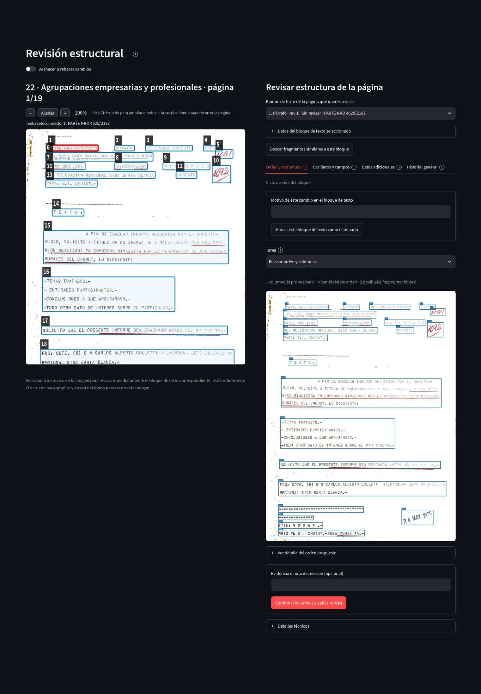
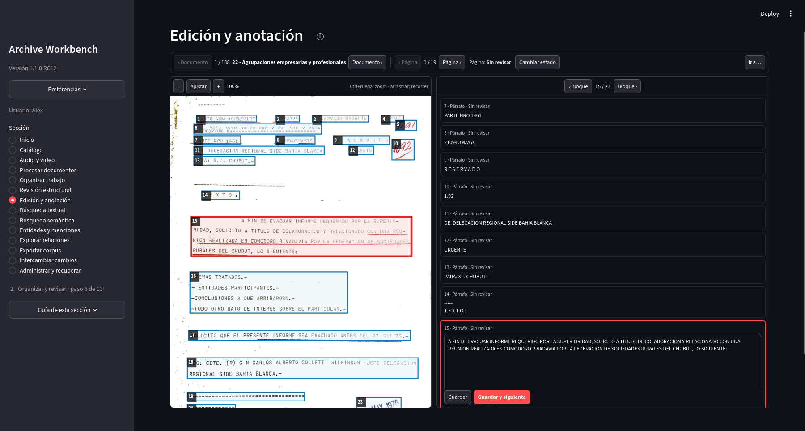
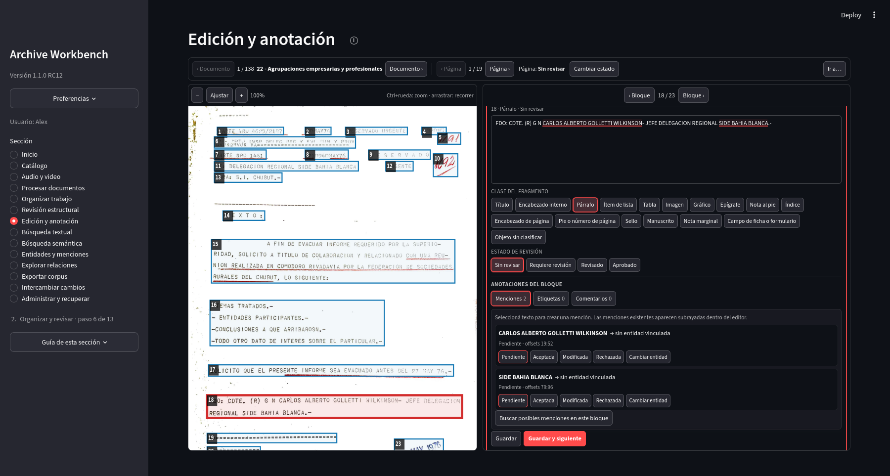

Organización y revisión
Revisión documental
La revisión documental se reparte entre dos secciones de la aplicación. Revisión estructural trabaja con la constitución de la página y Edición y anotación reúne lectura, corrección y anotaciones sobre los bloques de texto.
Revisión estructural
Esta sección muestra la página digitalizada y sus regiones. Permite revisar orden de lectura, columnas, partes internas, casilleros y campos, datos adicionales de extracción e historial. Los cambios estructurales se conservan separados de la corrección textual.
{kind=link}

Abrir captura completa
Edición y anotación
Esta sección mantiene visibles la imagen y todos los bloques de texto de la página. Seleccionar un bloque textual centra su región en la imagen; seleccionar una región lleva al bloque correspondiente. Sólo el bloque activo se transforma en editor. La clase del bloque se elige mediante una paleta de opciones visibles y la corrección se guarda mediante acciones explícitas.
Guardar y siguiente conserva los cambios del bloque activo y continúa el recorrido. Al final de una página o de un documento, la acción permite continuar con la unidad siguiente.
{kind=link}

Abrir captura completa
Estado de la página
Las dos secciones comparten el mismo estado de revisión de la página. Puede consultarse y modificarse desde Revisión estructural o desde la cabecera de Edición y anotación. El cambio se registra una sola vez y queda disponible para los controles de calidad y las operaciones automáticas.
Las sugerencias automáticas de menciones utilizan por defecto páginas aprobadas. Si una página todavía no cumple ese alcance, la aplicación informa su estado actual para que pueda revisarse antes de ejecutar la sugerencia.
Menciones, etiquetas y comentarios
El bloque activo reúne tres tipos de anotación. Una mención vincula una aparición textual concreta con una ficha de Entidades y menciones o la conserva pendiente hasta resolverla. Las etiquetas clasifican el bloque y los comentarios registran observaciones sin modificar el texto.
Al seleccionar un fragmento dentro del editor aparecen acciones para crear una mención, una etiqueta o un comentario sobre ese contexto. Las menciones existentes se señalan dentro del texto para conservar visible la relación entre el rango anotado y su bloque.
{kind=link}

Abrir captura completa
Historial
Las correcciones, cambios estructurales y cambios de estado generan revisiones registradas. El control Deshacer o rehacer cambios trabaja sobre ese historial y conserva la procedencia de las modificaciones anteriores.